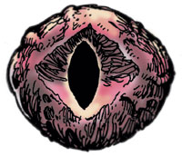
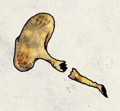
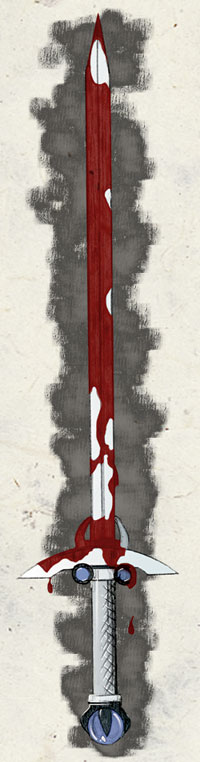
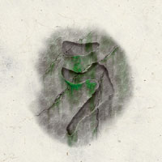
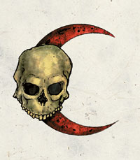
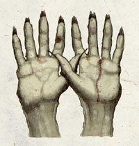
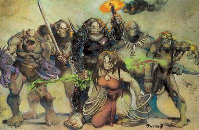

兽人神系 Orc Pantheon
邪恶的生命崇拜邪恶的力量（黑暗精灵与他们的神系就是最好的例证）。兽人神系则是另一种类型的组合，虽然不像前者那么狡诈，不过却可以对其子民提供更强大的保护。
【强大神力 Greater Power】

格努须 Gruumsh （兽人主神）
别称：不眠者 He Who Never Sleeps，独眼神 the One-Eyed God，警戒者 He Who Watches
圣徽：
居住界域：尼沙克国度（兽人国度） Nishrek
阵营：混乱邪恶 CE
神职：兽人 orcs，征服 conquest，存活 survival，力量 strength，疆土 territory
信徒：战士，兽人
牧师阵营：混乱中立 CN，中立邪恶 NE，混乱邪恶 CE
神域：洞穴 Cavern，混乱 Chaos，邪恶 Evil，憎恨 Hatred，兽人 Orc，力量 Strength，战争 War
喜好武器：血矛 The Bloodspear（长矛 longspear或短矛 shortspear）
【中等神力 Intermediate Power】
无
【弱等神力 Lesser Power】

巴格杵 Bahgtru （兽人的力量与愚勇之神）
别称：强者 The Strong，断腿者 the Leg Breaker，格努须之子 the Son of Gruumsh
圣徽：碎裂的大腿骨
居住界域：尼沙克国度（兽人国度） Nishrek
阵营：混乱邪恶 CE
神职：忠诚 loyalty，愚笨 stupidity，野蛮之力 brute strength
信徒：野蛮人，兽人，肉体强壮的生物，战士，摔角选手
牧师阵营：混乱中立 CN，中立邪恶 NE，混乱邪恶 CE
神域：混乱 Chaos，邪恶 Evil，兽人 Orc，力量 Strength
喜好武器：碎咬 Crunch（带刺铁手套 spiked gauntlet）

依那伏 Ilneval （兽人的军神）
别称：领导群众者 The Horde Leader，制造战争者 the War Maker，格努须的副官 the Lieutenant of Gruumsh
圣徽：染血的长剑
居住界域：尼沙克国度（兽人国度） Nishrek
阵营：中立邪恶 NE
神职：战争 war，战斗 combat，压倒性的胜利 overwhelming numbers，战略 strrategy
信徒：野蛮人，战士，兽人
牧师阵营：守序中立 LN，混乱中立 CN，中立邪恶 NE
神域：毁灭 Destruction，邪恶 Evil，兽人 Orc，计划 Planning，战争 War
喜好武器：袭敌剑 Foe Smiter（长剑 longsword）

茹赛可 Luthic （兽人的生命女神）
别称：洞穴母亲 The Cave Mother，血月女巫 the Blood Moon Witch
圣徽：兽人文中的「家」符号
居住界域：尼沙克国度（兽人国度） Nishrek
阵营：中立邪恶 NE
神职：洞穴 caves，兽人女性 orc females，家庭 family，智慧 wisdom，丰饶 fertility，医疗 healing，奴役 servitude
信徒：武僧，兽人女性，符文师
牧师阵营：守序中立 LN，混乱中立 CN，中立邪恶 NE
神域：洞穴 Cavern，土 Earth，邪恶 Evil，家庭 Family，医疗 Healing，兽人 Orc
喜好武器：长爪 A hand with long claws（附爪的护腕 claw bracer）

沙葛司 Shargaas （兽人的暗袭之神）
别称：夜之王 The Night Lord，��刃 the Blade in the Darkness，潜行者 the Stalker Below
圣徽：骷髅与血红的新月
居住界域：尼沙克国度（兽人国度） Nishrek
阵营：混乱邪恶 CE
神职：夜晚 night，窃贼 thieves，潜行 stealth，黑暗 darkness，幽暗地域 the Underdark
信徒：刺客，暗黑卫士，兽人，影舞者，窃贼
牧师阵营：混乱中立 CN，中立邪恶 NE，混乱邪恶 CE
神域：混乱 Chaos，黑暗 Darkness，邪恶 Evil，兽人 Orc，诡术 Trickery
喜好武器：夜之刃 Nightblade（短剑 short sword）

依卓斯 Yurtrus（兽人的死亡之神）
别称：白掌 White Hands，蛆王 the Lord of Maggots，腐烂者 the Rotting One
圣徽：黑色背景中的白色双掌
居住界域：尼沙克国度（兽人国度） Nishrek
阵营：中立邪恶 NE
神职：死亡 death，疾病 disease
信徒：刺客，武僧，兽人
牧师阵营：守序中立 LN，混乱中立 CN，中立邪恶 NE
神域：死亡 Death，毁灭 Destruction，邪恶 Evil，兽人 Orc，折磨 Suffering
喜好武器：苍白之手 Pale white hands（徒手攻击 unarmed strikes）
【微弱神力 Demigod】
无
兽人众神群像

由左至右为 愚勇之神 巴格杵 [弱等神力]
军神 依那伏 [弱等神力]
主神 格努须 [强大神力]
生命女神 茹赛可 [弱等神力]
暗袭之神 沙葛司 [弱等神力]
死亡之神 依卓斯 [弱等神力]